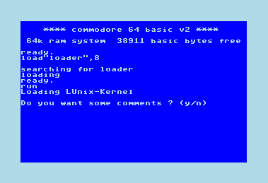
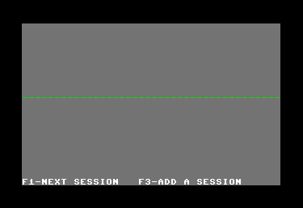
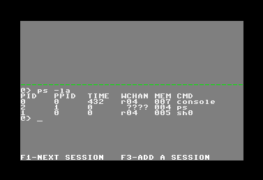
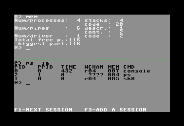
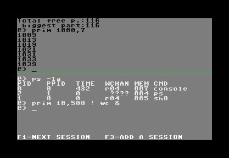

How does LUnix look like
Look at the pictures below. I changed the C64-colors a bit to make the
text more readable.
Start LUnix by loading the File named "loader"

After the initialization of LUnix it shows a splitted screen without any prompt

Press Funktionkey F3 (add session) and you'll get a prompt, then press F1 (next session)
this will highlight the promt. Now you can type commands in, like "ps -la" to list
up all processes running in long form.

By pressing F3 again you can get another promt (in the upper half of the screen)
Press F1 to switch between these two halfs. The command "mem" prints an overview of used
memory-pages (256 byte each). As you can see there are 4 processes consuming 24 pages in
total, another 3 pages are used for buffers (pipes) and 2 pages for the 1541-driver.
116 pages are left which are all in one big piece.

An other way to start commands is shown in the next screenshot. You can "connect" two commands by inserting a "!"
this will pipe all output from the first command to the input of the second command. Both
commands will run at the same time ! By putting a "&" at the end of the commandline
you can make all the commands run in the "background", means you can go on writing new commands
without waiting for the results.

You can also run a third session using "term9600" the LUnix terminal-server, i should better call
it "getty" because thats how this is called in normal UNIX-systems. After connecting a
RS232-Terminal to your little C64 you can login into LUnix from this terminal.
Such a terminal-session can look like this.
Send comments